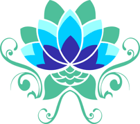

| dias de semana | 6:00-11:30 | 14:00-17:30 | 18:00-00:00 |
| finas de semanas e feriados | 8:00-10:30 | 14:00-16:30 | 17:00-19:00 |
clinica lótus
clinica lótus
horarios de atendimento
horarios de atendimento
Descubra os Diversos Serviços Oferecidos pela Nossa Clínica
Bem-vindo à nossa clínica, onde cuidamos da sua saúde de maneira completa e personalizada. Oferecemos uma ampla gama de serviços para atender às suas necessidades médicas e de bem-estar. Na nossa clínica, você encontrará:
Consultas Médicas Especializadas: Contamos com profissionais altamente qualificados em diversas especialidades, prontos para cuidar de você e da sua família.
Exames Diagnósticos Avançados: Equipamentos modernos para realização de exames laboratoriais, de imagem e outros procedimentos diagnósticos.
Tratamentos Preventivos: Programas de saúde preventiva para manter você saudável e proativo na promoção do seu bem-estar.
Cuidados Odontológicos: Serviços odontológicos completos, desde limpezas regulares até procedimentos estéticos avançados.
Fisioterapia e Reabilitação: Tratamentos especializados para recuperação de lesões e melhoria da qualidade de vida.
Psicologia e Aconselhamento: Apoio emocional e psicológico com profissionais dedicados ao seu bem-estar mental.
Medicina Estética: Procedimentos para cuidar da sua beleza e autoestima com segurança e eficácia.
Nutrição Personalizada: Planos alimentares elaborados por nutricionistas para melhorar sua saúde e qualidade de vida.
Atendimento Infantil: Especialistas em pediatria para cuidar da saúde das crianças com carinho e dedicação.
Serviços de Emergência: Pronto atendimento para situações que exigem cuidados imediatos e eficazes.
Na nossa clínica, o seu conforto e bem-estar são prioridade. Entre em contato conosco para saber mais sobre como podemos ajudá-lo a alcançar e manter uma vida saudável e feliz. Estamos aqui para cuidar de você em cada passo do caminho!